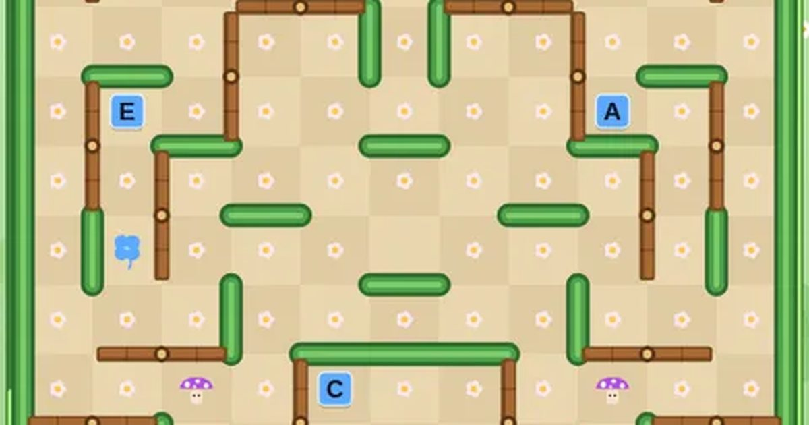

무당벌레 미로
Bug Maze
미로 · 추격무료설치 없음폰 · PC
▶ 지금 바로 하기로그인 없이 브라우저에서 바로 시작돼요
어떤 게임인가요?
정원 미로의 꽃을 모두 먹고, 나무 쪽문을 돌려 벌레 길을 막고, 클로버로 배율을 올리고, 글자로 BREAK · POCKET을 완성하세요.
목표 · 벌레를 피해 정원 미로의 꽃 · 클로버 · 글자를 모두 먹으면 다음 미로로 넘어갑니다.
이렇게도 찾아요
미로 게임무당벌레 게임미로 탈출추격 게임고전 미로maze gamemaze chaseladybug maze
#미로게임 #추억의오락실 #고전게임
게임 방법
- 미로 테두리를 따라 덩굴 시계가 한 바퀴 자랄 때마다 가운데에서 벌레가 한 마리씩 나옵니다 (최대 4마리).
- 나무 쪽문은 토리만 밀고 지나갈 수 있고, 지나가면 90° 돌아가 길이 바뀝니다. 벌레는 못 지나가요.
- 클로버와 글자는 평소 파란색이고, 몇 초마다 노란색 → 빨간색으로 잠깐 바뀝니다.
- 파란 클로버를 먹으면 이번 스테이지 점수 배율이 ×2 → ×3 → ×5로 올라요.
- 노란색일 때 먹은 글자는 BREAK(완성 시 목숨 +1), 빨간색일 때 먹은 글자는 POCKET(완성 시 +10,000)에 들어가요.
- 4번째 벌레가 나오면 가운데에 꿀단지가 생깁니다. 먹으면 보너스 점수와 함께 벌레가 잠시 멈추지만, 닿으면 여전히 위험해요.
- 보라 독버섯은 토리도, 벌레도 밟으면 끝. 벌레에 닿으면 목숨 −1 (처음 3개).
등장하는 것들
- 꽃 · 10점 × 배율
- 파란 클로버 · 배율 ↑ (×2 → ×3 → ×5)
- 노란 글자 · BREAK 모으기 → 목숨 +1
- 빨간 글자 · POCKET 모으기 → +10,000
- 꿀단지 · 700점부터 스테이지마다 +400 · 벌레 정지
- 독버섯 · 토리도 벌레도 밟으면 끝
공략 팁
- 클로버와 글자는 색이 바뀌는 순간을 기다렸다가 먹으세요.
- 쫓아오는 벌레 앞에서 쪽문을 지나가면 문이 돌아가 벌레 길이 막혀요.
- 독버섯 근처로 벌레를 유인하면 벌레가 독버섯을 밟고 사라집니다.
 무당벌레 꽃밭
무당벌레 꽃밭 씽씽 카트
씽씽 카트 과일 합치기
과일 합치기 2048
2048 색실 잇기
색실 잇기 윷놀이
윷놀이